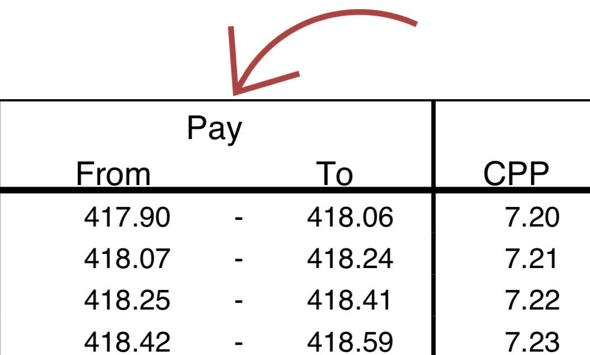

Calculate second additional CPP (CPP2) contributions deductions
Beginning January 1, 2024, once the first maximum pensionable earnings ceiling is reached, you must begin to calculate the second additional CPP (CPP2) deductions using the following methods.
How to use the CPP2 contributions tables and how to calculate manually the amount to withhold.
If the employee's province of employment is in Quebec, you are required to deduct the second Quebec Pension Plan (QPP) contributions and not the CPP2 contributions, refer to: Québec Pension Plan Contributions | Revenu Québec
On this page
Calculation methods
Reminder: There are online calculators that will calculate the CPP2 deductions for you.
Calculate CPP2 deductions based on the type of payment:
- Any payments (CPP2 tables)
- Any payments (manual calculation)
- Verification - Year-end or multiple pay periods
Any payments (CPP2 tables)
CPP2 contribution tables calculate the required CPP2 contribution for you on given ranges of income for a specified pay period.
Steps
-
Determine if you can use CPP2 contribution tables
CPP2 contribution tables can be used in most common situations.
Use when
- The payment is for remuneration paid in one of the common or uncommon pay periods for which tables are provided
- You received Form TD1-IN (in addition to the TD1) from your employee: only use these tables on the portion of their income which is taxable
Do not use when
- You are doing a year-end verification of your CPP2 contributions, use: Verification - Year-end or multiple pay periods
- The employee already reached their CPP2 maximum contributions for the year
Determine if your employee exceeded the first maximum annual pensionable earnings ceiling
- Employee’s gross pay for the year to date
- plus Employee’s taxable benefits and allowances for the year to date
-
minus
Employee’s non-pensionable earnings for the year to date
What are non-pensionable earnings
Non-pensionable earnings are:
- Received before and including the month they turned 18
- Received after the month they turned 70
- Received after the effective date of their completed and signed Form CPT30 to elect to stop contributing to the CPP
- Received before and including the month where the employee provided you a completed and signed Form CPT30 to restart contributing to the CPP
- Received while the employee is considered to be disabled under the CPP or QPP
- Employment income, benefits, and payments from which you do not deduct CPP
- equals This amount is the pensionable earnings for the year to date
-
minus
Employee's maximum pensionable earnings
How to calculate prorated maximum pensionable earnings
- Maximum annual pensionable earnings
- multiply by Number of months the employee is pensionable
- equals Result of first step of proration calculation
- divide by 12 months
- equals Maximum pensionable earnings after prorating
- equals A positive amount confirms your employee exceeded the first maximum annual pensionable earnings ceiling
Calculation example
Joseph receives a biweekly salary of $5,000 and $500 in taxable benefits per pay period. You have paid him for 13 pay periods so far in 2024 ($65,000 and $6,500, to a total of $71,500). All of his earnings are pensionable and he is pensionable for the full year of 2024.
- $65,000 is Joseph's gross pay for the year to date
- plus $6,500 is Joseph's taxable benefits for the year to date
- minus $0 because all of Joseph's earnings require CPP contributions
- minus $67,700 estimated figure is Joseph’s maximum annual pensionable earnings
- equals $3,800 estimated figure is Joseph's pensionable earnings that exceeded the first maximum pensionable earnings ceiling
You must continue to calculate Joseph's CPP2 contributions because the amount is positive.
Do not continue to next step if the amount is zero or negative.
You must continue to: Calculate CPP contributions deductions.
- Continue to next step if the amount is positive.
-
Determine if your employee reached the CPP2 maximum contribution
Use the applicable calculation depending if your employee is pensionable for the full year or if your employee is pensionable only for part of the year (prorate) .
Employee has more than one employer
You must withhold CPP2 contributions until the employee reaches the maximum without taking into account deductions made by another employer.
Calculation - Employee pensionable for full year
- Maximum annual employee CPP2 contributions in their employment with you
- minus Employee's CPP2 contributions to date for the year in their employment with you
- equals This amount is the maximum CPP2 contribution that you can deduct from your employee's pay for the rest of the year
Calculation example
All of Joseph’s earnings were pensionable for the year 2024. You have already deducted $100 in CPP2 from his earnings with you this year.
- $188 estimated figure is the maximum 2024 annual CPP2 contribution
- minus $100 is the amount for Joseph CPP2 contribution to date for the year in his employment with you
- equals $88 estimated figure is the maximum CPP2 contribution that you can deduct from Joseph's pay for the rest of the year
Calculation - Employee pensionable only for part of the year (prorate)
- Additional maximum annual pensionable earnings
- multiply by Number of months the employee is pensionable
- equals Result of first part of proration calculation
- divide by 12 months
- equals Additional maximum pensionable earnings after prorating
- multiply by 4% (CPP2 rate )
- equals This amount is the prorated CPP2 contribution after prorating in their employment with you
- minus Employee's CPP2 contributions to date for the year in their employment with you
- equals This amount is the maximum CPP2 contribution that you can deduct from your employee's pay for the rest of the year
Calculation example
Joseph turns 70 on February 24, 2024 and is pensionable for two months. You have already deducted $100 in CPP2 from his earnings with you this year.
- $4,700 estimated figure is Joseph's additional maximum annual pensionable earnings in his employment with you
- multiply by 2 months that Joseph is pensionable
- equals $9,400 estimated figure
- divide by 12 months
- equals $783.33 estimated figure is Joseph's additional maximum pensionable earnings after prorating
- multiply by 4% is the CPP2 rate
- equals $31.33 estimated figure is Joseph's maximum CPP2 contribution after prorating in his employment with you
- minus $10 is the amount for Joseph CPP2 contribution to date for the year in his employment with you
- equals $21.33 estimated figure is the maximum CPP2 contribution that you can deduct from Joseph's pay for the rest of the year
No CPP2 contributions should be deducted after the end of February 2024.
- Do not deduct CPP2 contributions if they have reached the maximum.
- Continue to next step if they have not reached the CPP2 maximum.
-
Get the CPP2 contributions tables
2024 tax year
Use the CPP2 contributions tables that matches your pay period.
-
Common pay periods per year: Option 1
-
Uncommon pay periods per year: Option 2
Previous years
Previous years
The 2024 CPP2 tables is the first tax year they are published.
-
-
Determine the pay range
Find the range that includes your employee's gross remuneration (including any taxable benefits) in the "Pay" column.
 -
Get the amount of CPP2 contributions to deduct
Find the amount under the "CPP2" column that corresponds with the range that includes your employee’s pay for the pay period.

-
Calculate the amount of CPP2 contributions you have to withhold
Use one of the following amount that applies to your situation:
- If the amount in step 6 is less than step 3, withhold the amount from step 6.
- If the amount in step 6 is greater than step 3, withhold the amount from step 3.
-
Calculate the amount of CPP2 contributions you have to remit
- CPP2 contributions you have to withhold from your employee (step 7)
- multiply by 2 (matching employer CPP2 contribution)
- equals This is the total amount you have to remit: your employee's share and your share of the CPP2 contribution
Calculation example
You have reviewed the CPP2 contribution tables and found that the required CPP2 contribution for Joseph’s earnings in this pay period is $40.40. You have also confirmed that this amount is not more than the remaining CPP2 contribution that you can deduct for the rest of the year.
- $40.40 is Joseph's CPP2 contributions you have to withhold (step 7)
- multiply by 2 (your matching CPP2 contribution)
- equals $80.80 is the total CPP2 contributions to remit (Joseph's share and your share of the CPP2 contribution
Any payments (manual calculation)
You can use the manual calculation method to calculate the CPP2 contribution that must be withheld for any payments made to your employees in a pay period without using the CPP2 tables.
Steps
Determine if your employee exceeded the first maximum annual pensionable earnings ceiling
Do not continue to next step if the amount is zero or negative.
You must continue to: Calculate CPP contributions deductions.
- Continue to next step if the amount is positive.
-
Determine if your employee reached the CPP2 maximum contribution
-
Calculate the total CPP2 pensionable income
- Employee's gross pay for the pay period
- plus Employee's taxable benefits and allowances for the pay period
- minus Employee’s non-pensionable earnings for the pay period
- equals This is the total CPP2 pensionable income for the pay period
Calculation example
Joseph receives a weekly salary of $500 and $50 in taxable benefits. He passed the maximum pensionable earnings ceiling for the year in July 2024 and this is your second calculation after he passed that ceiling.
- $500 is Joseph's gross pay for the pay period
- plus $50 is Joseph's taxable benefits for the pay period
- minus $0 because all of Joseph's earnings for the pay period require CPP2 contributions
- equals $550 is Joseph's total CPP2 pensionable income for the pay period
-
Determine the amount of CPP2 contributions to deduct
- Total CPP2 pensionable income for the pay period (step 3)
- multiply by 4% (CPP2 rate )
- equals This amount is the CPP2 contribution to deduct
Calculation example
The total of Joseph’s gross pay and taxable benefits for the weekly pay period is $550. All of Joseph's earnings require CPP2 contributions. He passed the maximum pensionable earnings for the year in July 2020 and this is your second calculation after he passed that ceiling.
- $550 is Joseph's total pensionable income for the pay period (step 3)
- multiply by 4% is the CPP2 rate
- equals $22 is the amount of CPP2 contribution to deduct
-
Calculate the amount of CPP2 contributions you have to withhold
Use one of the following amount that applies to your situation:
- If the amount in step 4 is less than step 2, withhold the amount from step 4.
- If the amount in step 4 is greater than step 2, withhold the amount from step 2.
-
Calculate the amount of CPP2 contributions you have to remit
- CPP2 contributions you have to withhold from your employee (step 5)
- multiply by 2 (matching employer CPP2 contribution)
- equals This is the total amount you have to remit: your employee's share and your share of the CPP2 contribution
Calculation example
You have calculated the required CPP2 contribution for Joseph's earnings in the pay period is $22. You have also confirmed that this amount is not more than the remaining CPP2 contribution that you can deduct for the rest of the year.
- $22 is Joseph's contributions you have to withhold (step 5)
- multiply by 2 (your matching CPP2 contribution)
- equals $44 is the total CPP2 contributions to remit (Joseph's share and your share of the CPP2 contribution
Verification - Year-end or multiple pay periods
Use this calculation to verify an employee’s CPP2 contributions at year-end or for multiple pay periods at any time of year. This verification is used to determine if you have deducted properly, under deducted or over deducted CPP2 contributions.
Steps
-
Determine if your employee exceeded the first maximum annual pensionable earnings ceiling
The following calculation must include only pensionable earnings in their employment with you:
- Employee’s gross pay for the total period which will be included in box 14 of their T4 slip
- plus Employee’s taxable benefits and allowances for the total period which will be included in box 14 of their T4 slip
- minus Employee’s non-pensionable earnings
- equals This amount is the pensionable earnings for the period of employment
-
minus
Employee's maximum pensionable earnings
How to calculate prorated maximum pensionable earnings
- Maximum annual pensionable earnings
- multiply by Number of months the employee is pensionable
- equals Result of first step of proration calculation
- divide by 12 months
- equals Maximum pensionable earnings after prorating
- equals A positive amount confirms your employee exceeded the first maximum annual pensionable earnings ceiling
Calculation example
Your employee Joseph was pensionable for the whole year of 2024. You are about to prepare his T4 and are reviewing your payroll records to confirm that you have deducted enough CPP2 from his earnings this year. He was pensionable for the entire year.
- $85,000 is Joseph’s total salary, wages benefits, and allowances for the total period which will be included in box 14 of their T4 slip
-
minus
$0 is Joseph’s non-pensionable earnings. These are earnings:
- Received before and including the month they turned 18
- Received after the month they turned 70
- Received after the effective date of their completed and signed Form CPT30 to elect to stop contributing to the CPP
- Received before and including the month where the employee provided you a completed and signed Form CPT30 to restart contributing to the CPP
- Received while the employee is considered to be disabled under the CPP or QPP
- Employment income, benefits, and payments from which you do not deduct CPP
- equals $85,000 is Joseph's pensionable earnings for the period of employment
- minus $67,700 estimated figure is Joseph’s maximum annual pensionable earnings
- equals $17,300 estimated figure is Joseph's pensionable earnings that exceeded the first maximum pensionable earnings ceiling
You must continue to calculate Joseph's CPP2 contributions because the amount is positive.
Do not continue to next step if the amount is zero or negative.
You must continue to: Calculate CPP contributions deductions.
- Continue to next step if the amount is positive.
-
Confirm the amount of CPP2 pensionable earnings for the period of employment
- Employee’s additional maximum annual pensionable earnings
- minus Employee’s maximum annual pensionable earnings
- equals Result
- minus Pensionable earnings that exceeded the first maximum pensionable earnings ceiling (step 1)
- equals A negative amount confirms your employee's CPP2 pensionable earnings for the period of employment is $4,700
Calculation example
Your employee Joseph was pensionable for the whole year of 2024. You are about to prepare his T4 and are reviewing your payroll records to confirm that you have deducted enough CPP2 from his earnings this year. He was pensionable for the entire year and his total earnings were $85,000.
- $72,400 estimated figure is Joseph's additional maximum pensionable earnings
- minus $67,700 estimated figure is Joseph's maximum annual pensionable earnings
- equals $4,700 is the result
The result in step 1 is $17,300 and is more than $4,700. Use $4,700 to calculate step 3.
- If the amount is positive, this amount is the CPP2 pensionable earnings for the period of employment (step 3)
- If the amount is negative or zero, $4,700 is the CPP2 pensionable earnings for the period of employment (step 3).
-
Determine the amount of required CPP2 contributions for the period of employment
- CPP2 pensionable earnings for the period of employment (step 2)
- multiply by 4% (CPP2 rate )
- equals This amount is the employee's required CPP2 contributions for the period of employment
Calculation example
Joseph was paid monthly during the year of 2024 in his employment with your company. As his income ($85,000) was above both the maximum pensionable earnings and additional maximum pensionable earnings for the year, his CPP2 contributory earnings are the additional maximum pensionable earnings $4,700.
- $4,700 estimated figure is Joseph's CPP2 pensionable earnings for the period of employment (step 2)
- multiply by 4% is the CPP2 rate
- equals $188 estimated figure is the amount for your employee's required CPP2 contributions for the period of employment
-
Determine if you have under or over remitted for the period of employment
- Employee's required CPP2 contributions for the period of employment (step 3)
- minus CPP2 contributions you deducted from the employee for the period of employment
- equals This amount should be $0 if you have deducted correctly
Calculation example
You confirmed in your payroll records that a total of $TBD in CPP2 was deducted from Joseph’s pay during the year of 2024.
- $188 estimated figure is Joseph's required CPP2 contributions for the period of employment (step 2)
- minus $188 estimated figure is the CPP2 contributions you deducted from Joseph for the period of employment
- equals $0 is the amount, this means you have deducted correctly
- If the amount is positive you have under deducted for the year.
- If the amount is negative you have over deducted for the year.
To correct a deduction error:
- If you have not filed the information return, refer to: Make corrections before filing
- If you already filed the information return, refer to: Make corrections after filing
References
Related
- Administration of the Canada Pension Plan and the Employment Insurance Act
- Canada Pension Plan enhancement
Multimedia
- Webinar: Enhanced CPP & You | 45 minutes
- Webinar - How to use the payroll deductions tables | 18 minutes
Legislation
- CPP: 8
- Contributions by employees and employers in respect of pensionable employment
- CPP: 11.1
- Contribution rate
- CPP: 11.2
- First and second additional contribution rates
- CPP: 12
- Contributory salary and wages
- CPP: 17.1
- Additional maximum pensionable earnings
- CPP: 18.1
- Year’s additional maximum pensionable earnings
- CPP: 21(2)
- Amount to be deducted and remitted by employer
- CPP: Schedule 2
- First and second additional contribution rates
- CPP Reg: 4
- Computation of employee's contribution
- CPP Reg: 5.1(1)
- Computation of employee's contribution
- CPP Reg: 7
- Employer's contribution